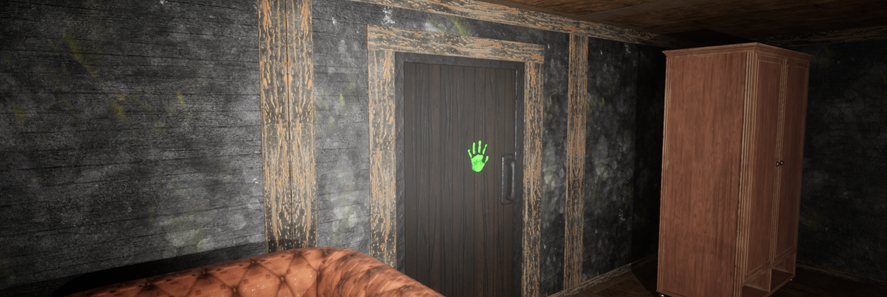

University Project #1
The first Unreal Engine 5 project I worked on was a survival horror game, much akin to the popular game 'Phasmophobia'. Its features were a procedurally generated map, multiplayer with both voice chat and a ping based communication system, and a ghost which could interact with its environment and the players.
In the project I worked with 4 other students, and I was responsible for the creation of the Artificial Intelligence elements, and the general quality of the product itself. For version control we used Git with LFS, which proved insufficient after a time for assets, but we didn't switch to another system due to time restrictions.
As part of my roles I have created a main AI ghost agent which could interact with the environment, and the players. It could open doors, turn off lights, leave different evidences (fingerprints, EMF traces) and even kill the player characters. This was done using Unreal Engine's Behavior Tree system for the logic, the Perception system for the senses (line of sight, hearing), and the Navigation system for movement. The biggest hurdle was the generation of navigation mesh in real time, keeping the mesh updated while not compromising the performance of the game and the accuracy of the agent using it. Later on, four distinct subtypes of the ghost were developed, each possessing unique abilities.
As part of Quality Assurance I had to make sure that the assets truly represented the object itself in space, as it was crucial for the ghost to interact with them, and for the navigation mesh to be generated correctly so the pathfinding would work optimally (avoiding obstacles, but if needed walking by or on them). I also had to make sure that the AI agent was not too strong, and worked as intended.